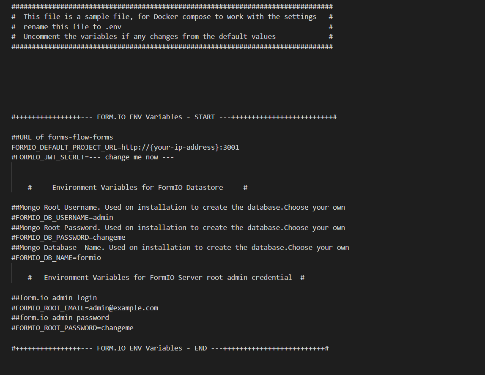

Docker Full Deployment
Installation Steps
These are the steps required to complete the installation and setup of formsflow.ai solution
- Keycloak setup
- forms-flow-analytics setup
- forms-flow-forms setup
- forms-flow-web, forms-flow-bpm, forms-flow-api setup
Make sure you have a Docker machine up and running.
- Keycloak Setup
- forms-flow-analytics Setup
- forms-flow-forms Setup
- Make sure your current working directory is "/forms-flow-ai/deployment/docker".
- Rename the file sample.env to .env.
- Modify the environment variables in the newly created .env file if needed. Environment variables are given below,
- Start the forms-flow-forms service.
- Run
docker-compose up -d forms-flow-formsto start - forms-flow-web, forms-flow-bpm & forms-flow-api Setup
- Make sure your current working directory is "/forms-flow-ai/deployment/docker".
- Modify the environment variables inside .env file if needed. Environment variables are given below.
- NOTE - While configuring USER_ACCESS_PERMISSIONS the accessAllowApplications will hide / show application tab, the same way accessAllowSubmissions does for viewSubmission button. To enable this feature you need to add access-allow-applications, access-allow-submissions with the respective user group in keycloak.
Follow the instructions givenhere
Start the analytics server by following the instructions givenhere

Follow the below steps for mapping the role IDs.
Health Check
Clickhere .
NOTE: Use --build command with the start command to reflect any future .env /
code changes eg :
docker-compose up --build -d



Running the application
- Run
docker-compose up -dto start.
To stop the application
- Run
docker-compose stopto stop.
Health Check
- Analytics should be up and available for use at port defaulted to 7000 i.e. http://localhost:7000/
- Business Process Engine should be up and available for use at port defaulted to 8000 i.e. http://localhost:8000/camunda/
- FormIO should be up and available for use at port defaulted to 3001 i.e. http://localhost:3001/
- formsflow.ai Rest API should be up and available for use at port defaulted to 5000 i.e. http://localhost:5000/checkpoint
- formsflow.ai web application should be up and available for use at port defaulted to 3000 i.e. http://localhost:3000/
-
Default user credentials are providedhere
« Previous Next »